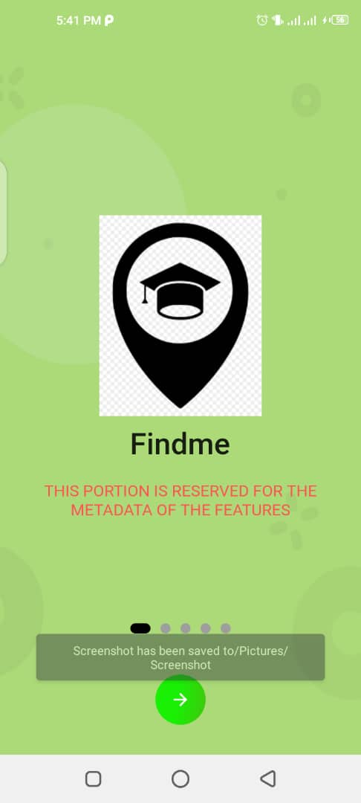

Getting started with Campus homie
Use Campus homie on your computer, phone, or tablet to search, explore, and find your way around campus. On your phone, open campus homie.
To use the find me feature
- On your Android phone or tablet, open the Google Maps app
- Search for your destination or tap it on the map
- In the bottom left, tap Directions Directions
To Start navigation
- Turn on your GPS
- Let the app access your current location and audio speakers
- Search for a place or tap it on the map
- In the bottom left, tap Directions.
- If you touch and hold the button instead, you’ll start navigation
To find resturants near you
- On your Android phone or tablet, open the Google Maps app
- Search for your destination or tap it on the map
- In the bottom left, tap Directions Directions
